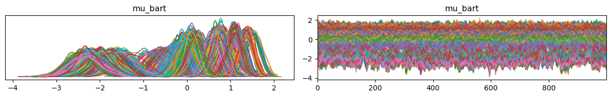
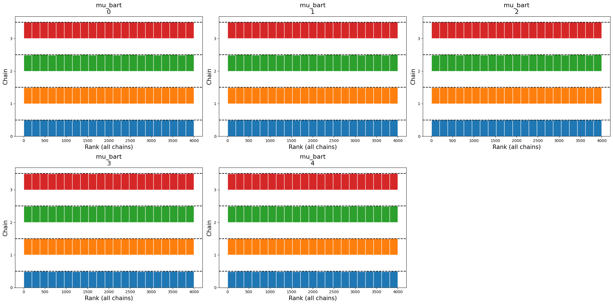
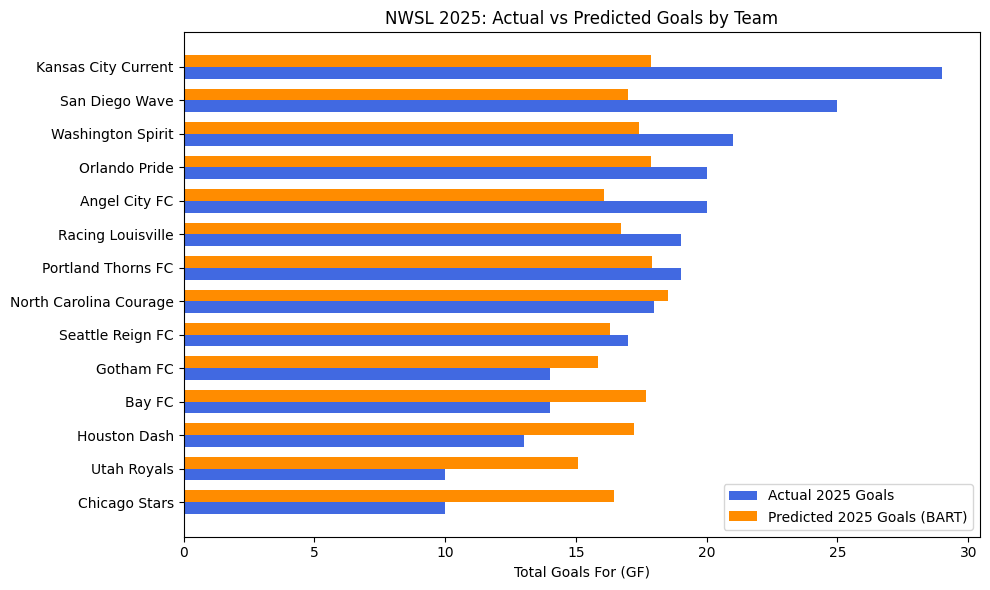

Code
import pandas as pd
import numpy as np
import pymc as pm
import pymc_bart as pmb
import arviz as az
RANDOM_SEED = 139I want to explore using PyMC, and Bayesian Additive Regression Trees (BART) to predict goals for the 2025 NWSL per team and see how close the predictions can get for that season. If you haven’t used BART before, it is fantastic for sports analytics. It natively figures out complex, non-linear relationships between variables so you don’t have to spend hours manually engineering them.
import pandas as pd
import numpy as np
import pymc as pm
import pymc_bart as pmb
import arviz as az
RANDOM_SEED = 139We are working with a dataset of historical NWSL match stats from kaggle see here, and our target is gf (Goals For).
The biggest trap in sports forecasting is data leakage. If we want to predict a game that hasn’t happened yet, we absolutely cannot use post-game stats like expected goals (xG), total shots, or possession. Before kickoff, we only know a few things: the teams playing, the venue, the round, and the day of the week.
Here is how we load the data and convert those categories into numbers the model can actually read.
# Load the raw data and save the original names for later
raw_df = pd.read_csv("shooting.csv").dropna().copy()
team_mapping = dict(enumerate(raw_df['team'].astype('category').cat.categories))
opp_mapping = dict(enumerate(raw_df['opp'].astype('category').cat.categories))
# Swap the text categories for integer codes
df = raw_df.copy()
cat_cols = ['team', 'opp', 'venue', 'round', 'day']
df[cat_cols] = df[cat_cols].apply(lambda x: x.astype('category').cat.codes)
# how many seasons are we working with
df['season'].unique()array([2025, 2024, 2023, 2021, 2019])# Split the data into training (historical) and testing (2025)
train_df = df[df['season'] < 2025].copy()
infer_df = df[df['season'] == 2025].copy()
# Clean up the target variable and drop any missing games
train_df['gf'] = pd.to_numeric(train_df['gf'], errors='coerce')
train_df = train_df.dropna(subset=['gf'])
train_target = train_df["gf"].astype(int)
# Grab just the pre-match features
train_features = train_df[cat_cols].fillna(-1)
infer_features = infer_df[cat_cols].fillna(-1)define bart. use a poisson distribution for goal scored because that is the most commonly used one for soccer goals and goals have to be integers. You can’t score 1.7 goals.
with pm.Model() as nwsl_gf_model:
# Register our data so we can update it later
X_data = pm.Data("X_data", train_features)
y_data = pm.Data("y_data", train_target)
# Set up the BART model with 50 trees
mu_bart = pmb.BART("mu_bart", X_data, y_data, m=50)
# Use an exponential link function to keep the Poisson rate positive
lam = pm.math.exp(mu_bart)
# Likelihood
y_obs = pm.Poisson('y_obs', mu=lam, observed=y_data)
# Run the sampler
trace_nwsl = pm.sample(random_seed=RANDOM_SEED,quiet=True, progressbar=False)check some plots and convergence of the MCMC chains
import arviz_plots as azp
import matplotlib.pyplot as plt
az.plot_trace(trace_nwsl)
plt.tight_layout()
plt.show()
then look at summary statistics. Want an r hat close to 1 or 1.01 for most of these
# Generate a statistical summary of the trace
summary_df = az.summary(trace_gf_nwsl)
# Display the key convergence columns
print(summary_df[['mean', 'sd', 'hdi_3%', 'hdi_97%', 'r_hat', 'ess_bulk']]) mean sd hdi_3% hdi_97% r_hat ess_bulk
mu_bart[0] -1.923 0.324 -2.564 -1.332 1.01 530.0
mu_bart[1] -0.621 0.262 -1.113 -0.120 1.00 574.0
mu_bart[2] 0.680 0.160 0.364 0.962 1.00 563.0
mu_bart[3] -2.173 0.288 -2.726 -1.649 1.01 469.0
mu_bart[4] 0.763 0.183 0.410 1.105 1.01 621.0
... ... ... ... ... ... ...
mu_bart[1062] 0.140 0.204 -0.250 0.498 1.00 536.0
mu_bart[1063] -2.266 0.266 -2.740 -1.735 1.00 716.0
mu_bart[1064] 0.606 0.193 0.258 0.968 1.01 627.0
mu_bart[1065] 1.087 0.168 0.787 1.421 1.00 582.0
mu_bart[1066] -2.350 0.361 -3.045 -1.722 1.00 385.0
[1067 rows x 6 columns]looking for uniform chains. spikes to right or left indicate poor convergence and that that chain got caught up in parameter space.
# Generate a rank plot
az.plot_rank(trace_nwsl,
coords = {"mu_bart_dim_0": [0, 1, 2, 3, 4]})
plt.tight_layout()
plt.show()
# Plot the marginal effects
# Note: smooth=False stops the plotter from breaking on discrete categories
pmb.plot_pdp(
mu_bart,
X=train_features,
Y=train_target,
func=np.exp,
var_discrete=[0, 1, 2, 3, 4],
smooth=False
)
plt.tight_layout()
plt.show()# Check which features matter most
vi_results = pmb.compute_variable_importance(trace_nwsl, mu_bart, train_features)
pmb.plot_variable_importance(vi_results)
plt.show()array([<Axes: xlabel='season'>, <Axes: xlabel='team'>, <Axes: xlabel='round'>, <Axes: xlabel='day'>,
<Axes: xlabel='venue'>, <Axes: xlabel='opp'>, <Axes: xlabel='tm_std_Gls'>, <Axes: xlabel='tm_std_Sh'>,
<Axes: xlabel='tm_std_SoT'>, <Axes: xlabel='tm_std_Sot%'>, <Axes: xlabel='tm_std_G_Sh'>,
<Axes: xlabel='tm_std_G_SoT'>, <Axes: xlabel='tm_std_Dist'>, <Axes: xlabel='tm_std_FK'>,
<Axes: xlabel='tm_std_PK'>, <Axes: xlabel='tm_std_PKatt'>, <Axes: xlabel='tm_exp_xG'>,
<Axes: xlabel='tm_exp_npxG'>, <Axes: xlabel='tm_exp_npxG_Sh'>, <Axes: xlabel='tm_exp_G_xG'>,
<Axes: xlabel='tm_exp_np_G_xG'>, <Axes: xlabel='opp_std_Gls'>, <Axes: xlabel='opp_std_Sh'>,
<Axes: xlabel='opp_std_SoT'>, <Axes: xlabel='opp_std_Sot%'>, <Axes: xlabel='opp_std_G_Sh'>,
<Axes: xlabel='opp_std_G_SoT'>, <Axes: xlabel='opp_std_Dist'>, <Axes: xlabel='opp_std_FK'>,
<Axes: xlabel='opp_std_PK'>, <Axes: xlabel='opp_std_PKatt'>, <Axes: xlabel='opp_exp_xG'>,
<Axes: xlabel='opp_exp_npxG'>, <Axes: xlabel='opp_exp_npxG_Sh'>, <Axes: xlabel='opp_exp_G_xG'>,
<Axes: xlabel='opp_exp_np_G_xG'>], dtype=object)
with nwsl_gf_model:
# Make a dummy array of zeros to match the 2025 game count
dummy_target = np.zeros(len(infer_features), dtype=int)
pm.set_data({
"X_data": infer_features,
"y_data": dummy_target
})
# Generate the 2025 predictions
predictions_2025 = pm.sample_posterior_predictive(
trace=trace_nwsl,
random_seed=RANDOM_SEED,
progressbar=False
)
# Get the average predicted goals across all our MCMC draws
gf_2025_expected = predictions_2025.posterior_predictive["y_obs"].mean(dim=["chain", "draw"])
# Add the predictions to our dataframe
infer_df['predicted_gf'] = gf_2025_expected.values
infer_df['actual_gf'] = pd.to_numeric(infer_df['gf'], errors='coerce')
# Map the numbers back to the real team names so we can read it
eval_df = infer_df.dropna(subset=['actual_gf', 'predicted_gf']).copy()
eval_df['team'] = eval_df['team'].map(team_mapping)
eval_df['opp'] = eval_df['opp'].map(opp_mapping)Sampling: [mu_bart, y_obs] Sampling ... ━━━━━━━━━━━━━━━━━━━━━━━━━━━━━━━━━━━━━━━━ 100% 0:00:00 / 0:00:11 0:00:01 / 0:00:1100:01 / 0:00:11
season team opp predicted_gf
0 2025 0 16 1.35000
1 2025 0 15 1.21625
2 2025 0 11 1.54425
3 2025 0 5 1.26125
5 2025 0 9 1.22450
6 2025 0 14 1.23950
7 2025 0 12 1.40850
8 2025 0 1 1.35150
9 2025 0 8 1.45350
10 2025 0 2 1.45475
11 2025 0 3 1.38300
12 2025 0 4 1.17575
13 2025 1 12 1.36900
14 2025 1 8 1.45450
15 2025 1 14 1.22275# Calculate basic game-by-game error
eval_df['error'] = eval_df['predicted_gf'] - eval_df['actual_gf']
eval_df['abs_error'] = np.abs(eval_df['error'])
mae = eval_df['abs_error'].mean()
print(f"Mean Absolute Error (MAE): {mae:.2f} goals per game")
# Add up the total goals per team
team_totals = eval_df.groupby('team').agg(
Total_Actual_GF=('actual_gf', 'sum'),
Total_Predicted_GF=('predicted_gf', 'sum')
).reset_index()
team_totals = team_totals.sort_values('Total_Actual_GF', ascending=True)
# Plot the real season totals vs our model's totals
fig, ax = plt.subplots(figsize=(10, 6))
y_positions = np.arange(len(team_totals))
bar_height = 0.35
ax.barh(y_positions - bar_height/2, team_totals['Total_Actual_GF'],
height=bar_height, label='Actual 2025 Goals', color='royalblue')
ax.barh(y_positions + bar_height/2, team_totals['Total_Predicted_GF'],
height=bar_height, label='Predicted 2025 Goals', color='darkorange')
ax.set_yticks(y_positions)
ax.set_yticklabels(team_totals['team'])
ax.set_xlabel('Total Goals For (GF)')
ax.set_title('NWSL 2025: Actual vs Predicted Goals by Team')
ax.legend()
plt.tight_layout()
plt.show()--- 2025 Match-by-Match Prediction Accuracy ---
Mean Absolute Error (MAE): 0.95 goals per game
Root Mean Squared Error (RMSE): 1.18 goals per game
Matches where actual goals differed most from predicted:
team opp actual_gf predicted_gf error abs_error
91 Orlando Pride Chicago Stars 6.0 1.51600 -4.48400 4.48400
139 San Diego Wave Courage 5.0 1.38650 -3.61350 3.61350
155 Seattle Reign FC Royals 4.0 1.16325 -2.83675 2.83675
113 Portland Thorns FC Dash 4.0 1.17125 -2.82875 2.82875
134 San Diego Wave Louisville 4.0 1.19100 -2.80900 2.80900# Aggregate total actual goals and total predicted goals per team
team_totals = eval_df.groupby('team').agg(
Total_Actual_GF=('actual_gf', 'sum'),
Total_Predicted_GF=('predicted_gf', 'sum')
).reset_index()
# Sort by Actual Goals for a cleaner plot
team_totals = team_totals.sort_values('Total_Actual_GF', ascending=True)
#team_totals['team'] = team_totals['team'].map(team_mapping)
# ---------------------------------------------------------
# Plot: Actual vs Predicted 2025 Goals by Team
# ---------------------------------------------------------
fig, ax = plt.subplots(figsize=(10, 6))
# We use the team codes for the Y-axis positions
y_positions = np.arange(len(team_totals))
bar_height = 0.35
# Plot actual and predicted bars side-by-side
ax.barh(y_positions - bar_height/2, team_totals['Total_Actual_GF'],
height=bar_height, label='Actual 2025 Goals', color='royalblue')
ax.barh(y_positions + bar_height/2, team_totals['Total_Predicted_GF'],
height=bar_height, label='Predicted 2025 Goals (BART)', color='darkorange')
# Formatting the plot
ax.set_yticks(y_positions)
ax.set_yticklabels(team_totals['team']) # If you mapped team names back, they will show here!
ax.set_xlabel('Total Goals For (GF)')
ax.set_title('NWSL 2025: Actual vs Predicted Goals by Team')
ax.legend()
plt.tight_layout()
plt.show()
# Print the aggregated dataframe
print("\n--- 2025 Season Totals ---")
print(team_totals.to_string(index=False))
--- 2025 Season Totals ---
team Total_Actual_GF Total_Predicted_GF
Chicago Stars 10.0 16.45075
Utah Royals 10.0 15.07650
Houston Dash 13.0 17.22800
Bay FC 14.0 17.68500
Gotham FC 14.0 15.84625
Seattle Reign FC 17.0 16.30600
North Carolina Courage 18.0 18.50425
Portland Thorns FC 19.0 17.89900
Racing Louisville 19.0 16.72525
Angel City FC 20.0 16.06275
Orlando Pride 20.0 17.87200
Washington Spirit 21.0 17.40650
San Diego Wave 25.0 16.99150
Kansas City Current 29.0 17.85525